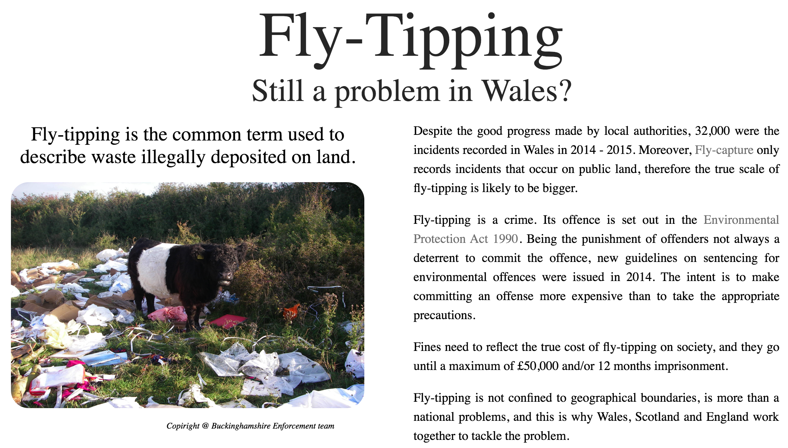
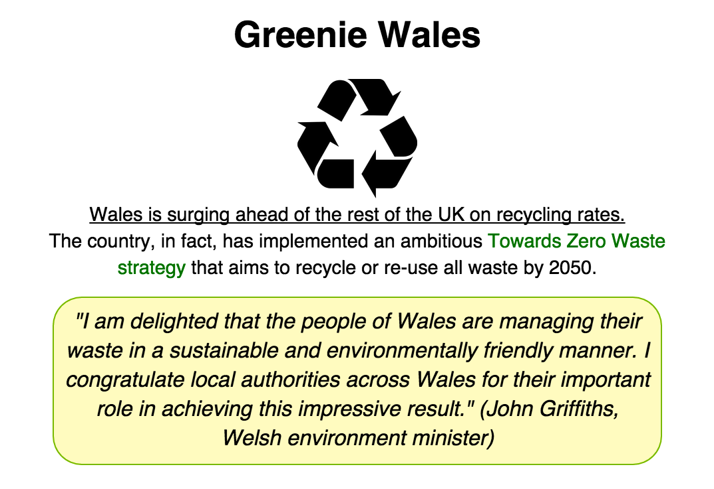
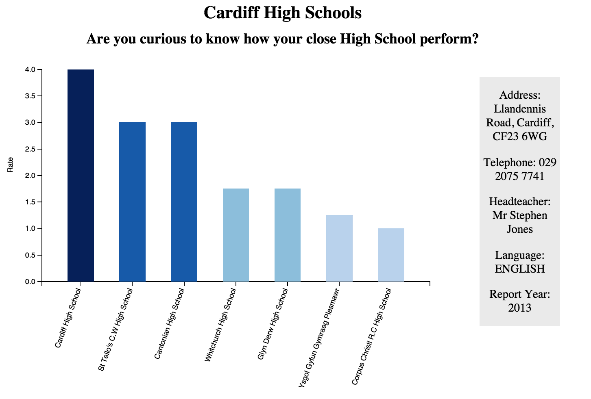
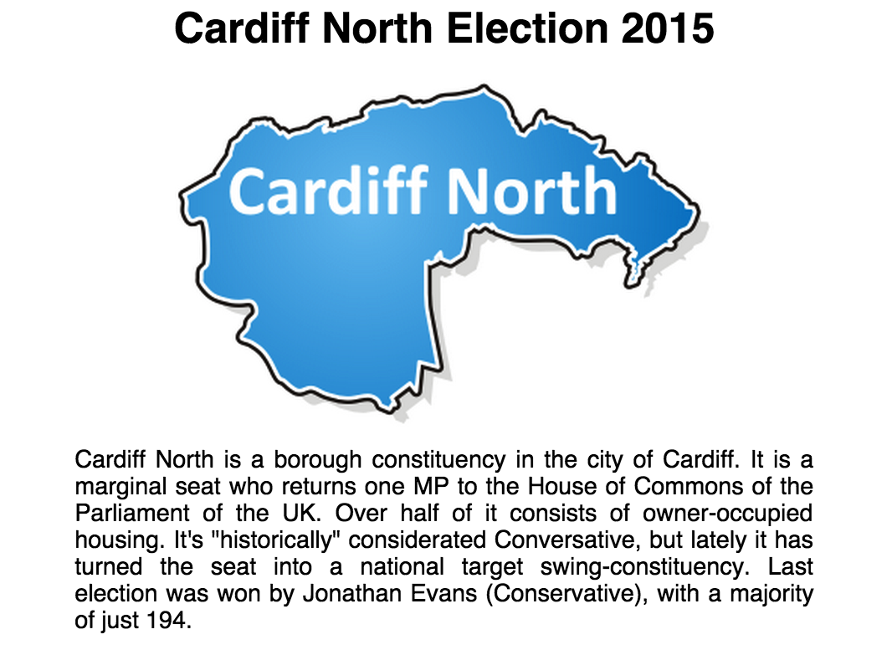
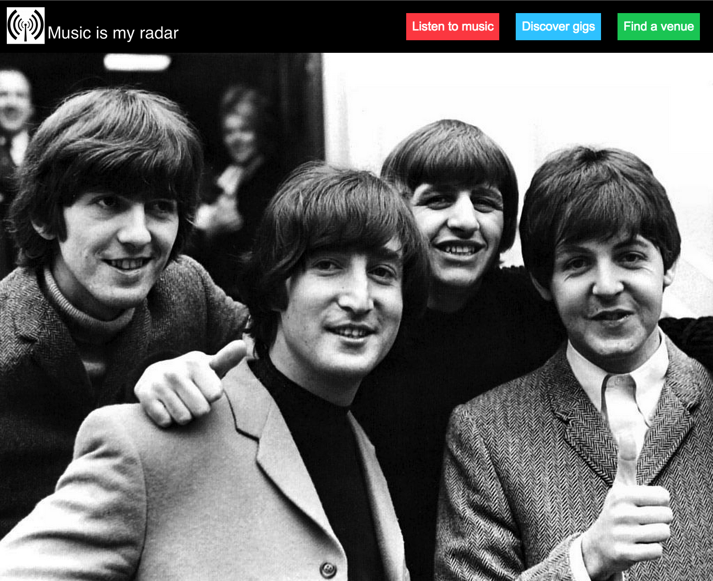
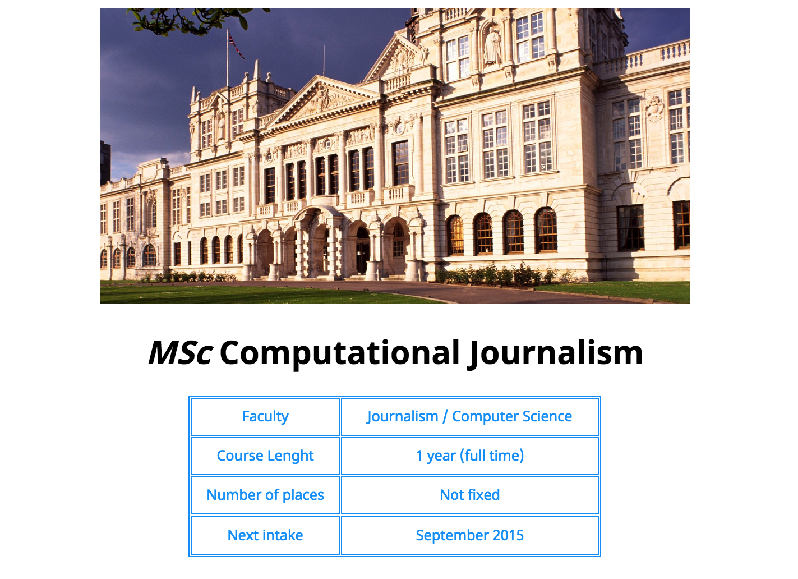

Annalisa Esposito - Portfolio
Fly-tipping in Wales: A digital investigation

This is my dissertation project. Its aim is to produce a digital story on fly-tipping in Wales that goes from 2006 to 2015. The website is divided into several independent sections, each of them corresponding to a feature with a specific focus. The goal is not just to produce a collection of data, but it is to use that as a starting point to create an enthralling story with a profound insight. The sub-topics that will be examined are: where and when fly-tipping happens, how much it costs the Government, what material is the most dumped, who commits the crime and why, what people think about it and prosecutions rates.
Recycling in Wales

Being very concerned about Recycling and Sustainability issues, I created a data visualisation which gives a bit of a history of Wales' journey to get "green".
My intention was not only to show enthralling data, but also to create an insightful story with a clear logical thread.
For the visualisations, I enterily rely on using the Java Script library D3, while the leading data source was StatWales.
Cardiff High Schools
In these visualisations, I took into exam High schools within 2km to the Cardiff bus route 1/2, for a Digital Investigation project. This work involved researching a list of all the schools in the city from a reliable source, geo-locating them and finding the ones I could attach to the 1/2 bus route map using Python. After that, I researched and downloaded each individual school's report from Estyn.com and I studied the parameters to use to carry on an evaluation of the schools. I eventually chose: Pupils’ outcome, Quality of the teaching, Care, support and guidance, Leadership and Management. A problem I had to face was that old reports had a ranking 1-4, while the new ones 1-5; I overcame this issue creating a new ranking that could include both. I also had to look up at every single report and manually collect the figures I needed, since all the documents were in a pdf format. To visualise schools’ performances, I had to calculate the average of the 4 criteria. I then used D3 to create the bar graph and I sorted it by descending order. I also provided a tooltip that allows the user to get general information about the school as address, telephone number, head teacher, language and report year. In the end, I wrote an introductive paragraph to give a sort of background to the visualisation and I inserted a table – created with python since there were numerous data – to make my analysis clear and transparent.
Election Cardiff North

I searched and put together information about every single candidate in Cardiff North area: who they are and what they have done so far. I also created three donut pie charts to show past results, these visualisations get smaller and smaller going back in time for a scenic effect. I used a tooltip and a legend inside the chart (which saves space on the page) to provide readers with further information such as percentage, candidates’ names and respectively party.
Music is my Radar (APIs)

This was for a coursework as well, and it was the first time I used APIs. Being a music lover, I decided to use three different APIs for this project which are Spotify, Band in Town and Google Maps. My intend was to create a discovery voyage of new music and potential gigs, for possible music lover users like me. Everything starts by searching for an artist and the research can take you straight to interact with a map and looking for a particular venue.
My first website!

Back in November, after only a month coding, I was asked to create my first website. The webpage is very simple, generated just using html and css. Although it does not have elaborated features on dispay, I decided it deserves a spot in here being my first attempt in coding.
About me
Address: 107 Diana Street, Cardiff, CF24 4TU
Email: annalisae.esposito@gmail.com
Linkedin: https://uk.linkedin.com/in/espositoannalisa
Telephone: 07516158924 | Twitter: @AnnalisaEspos
I have been awarded a Master’s degree in Computational Journalism from Cardiff University. The course focused on data journalism, digital media, online investigation, Web Application Development, Visual Communication and Information Design.
I gained experience as a data journalist when working for Media Wales. This made me confident with analysing data, working with spreadsheets, spotting patterns and interesting trends. I am also positive and versatile with a fine eye for detail.
During my university studies in Italy, I collaborated with two Italian magazines Ozio Magazine and Music Zoom. I was responsible for my own column on classic movies, I authored critical reviews of new released albums and had free pass for live concerts, interviewed music artists in their changing rooms.
I came second to a local contest called “Festival delle Letterature dell’Adriatico” with this piece.
I am perceptive and a quick learner. In fact, I come from a Humanities background (got graduated cum laude, with the maximum score of 110/110) but looking for new possibilities, and aware of the fact that journalists need to be always one step ahead, I started a MSc in the UK to acquire new skills.
I have a strong linguistic competence. I am fluent in Italian (being my native tongue) and English (having lived in the UK for several years). I also know a bit of French and Spanish, due to my love for history and Roman languages.
One of my big passions is travelling, in fact I have visited more than 15 countries. Last summer, after finishing University, I explored Europe for around three months. It was an amazing experience, which changed my perception on life and gave me the opportunity to familiarise with different cultures and environments, but also to sharpen my organizational and planning skills.
Among my interests, besides backpacking, are: movie soundtracks played by a live orchestra, board games, linguistics, etymology, environmental issues and outdoor activities.